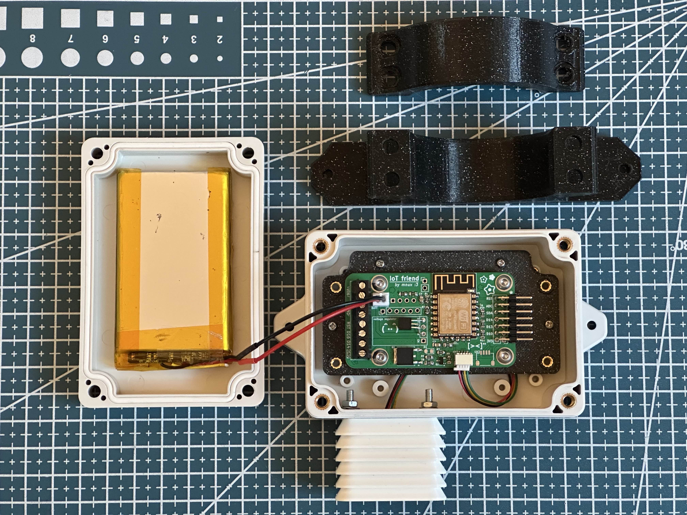
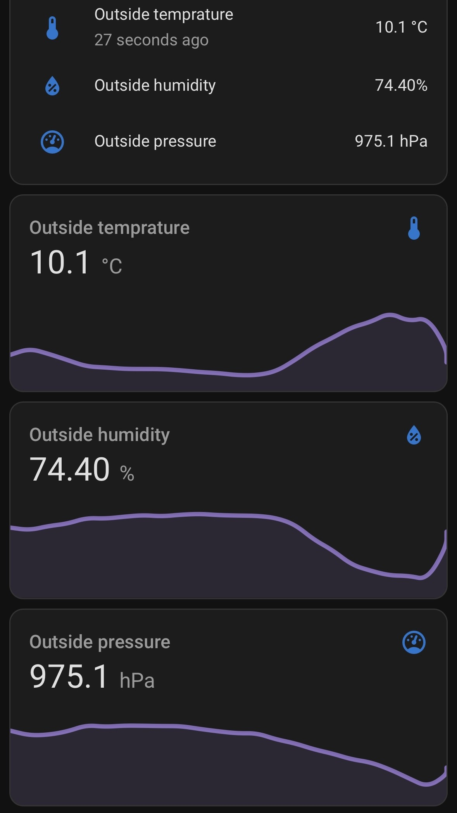
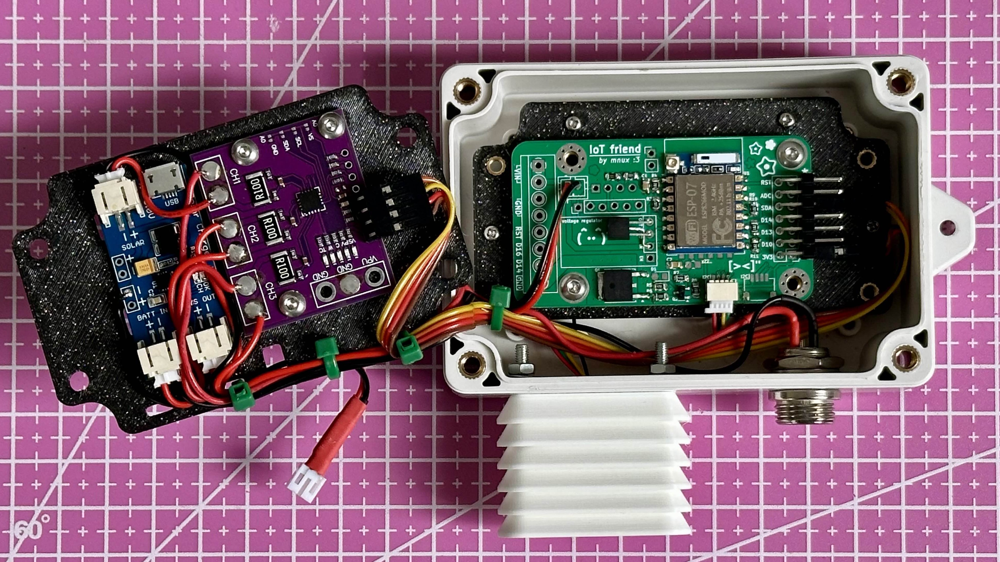
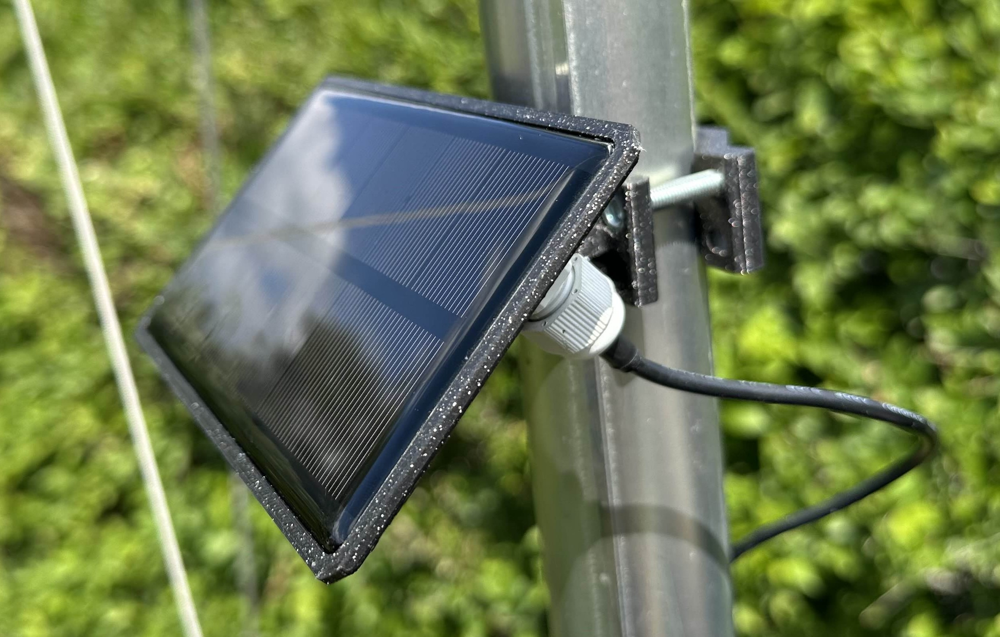

Weather station

Overview
A basic weather station built I with ESPHome for Home Assistant.
Basic construction
I choose a small weather proof box and made a mounting bracked for my new IoT Friend board. The IoT Friend board was designed for all of my different ESPHome IoT projects, it allowed me to quickly build a basic Weather Station platform in a few hours. It has features for battery powered devices like being able to turn on/off power to the sensors.
For start I added a 3000mAh battery, when transmitting every 45 seconds it will last around 5 days. Which is just enough time for my solar panel to arrive.

Temperature, humidity and pressure
Im starting with just a few small sensors I had on my desk. I found an AHT-20 for temp. and humidity and BMP-280 for pressure and temp.


Solar charger + power monitoring
For powering this station with a solar panel I got a cheap CN3065 solar charger module which I placed inside of the weather staion on a second "panel" which I can fold out. There is also a purple INA3221 power (voltage & current) monitoring module which monitors: solar, battery and electronics power. 24. 5. 2025

Solar panel
With the solar charger I got this 1W solar panel for which I printed a mount. So far (during the summer) it seems to be producing enough power to sustain the station indefinitely, however this might change as I start to add more sensors and days start getting shorter.
